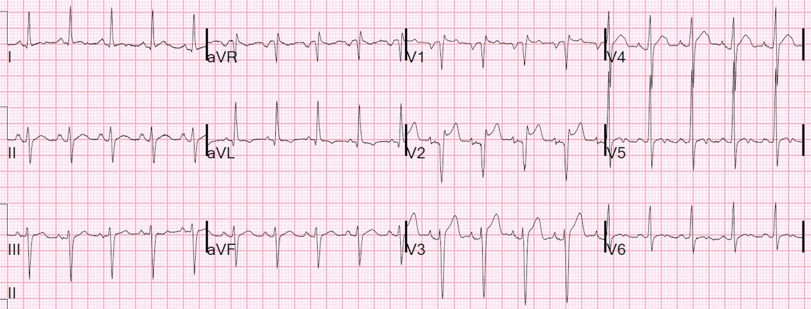
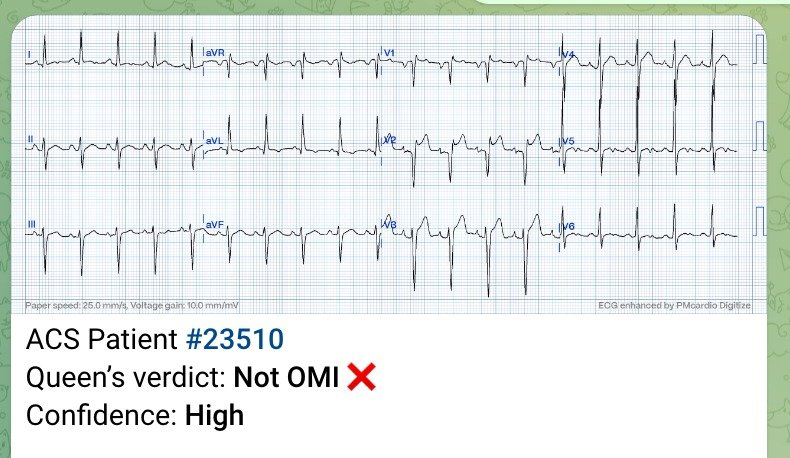
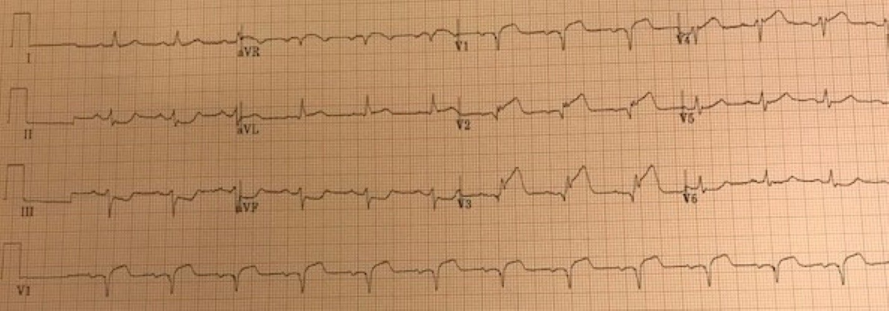
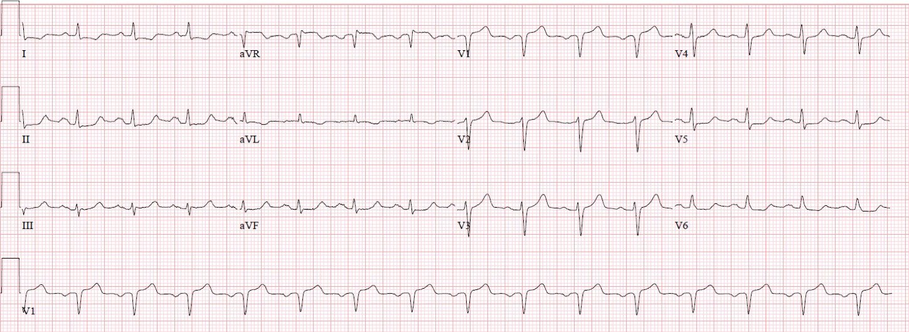
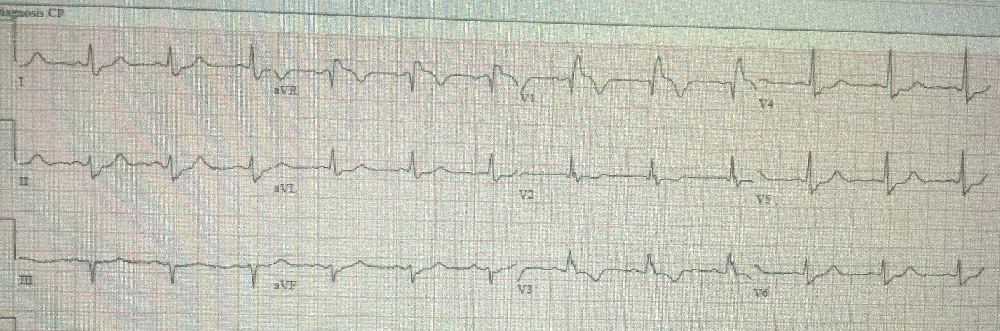
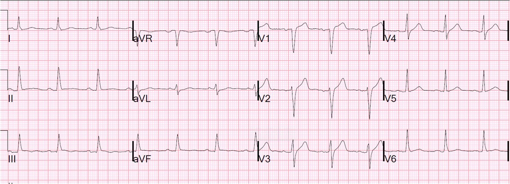
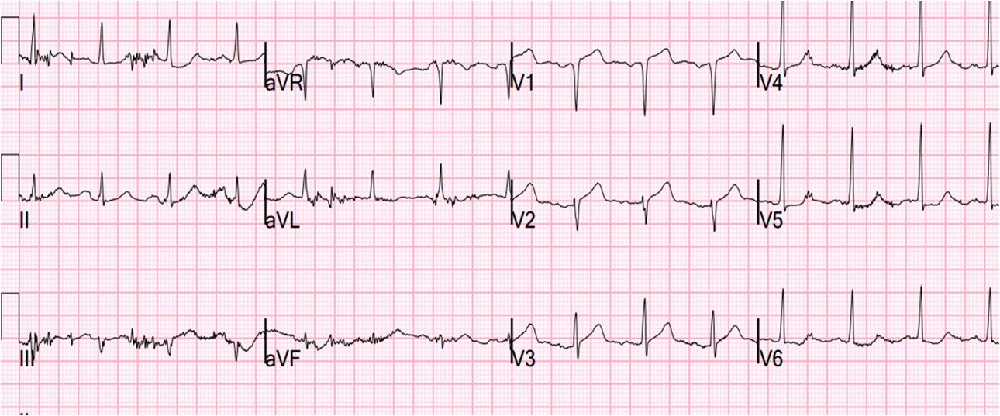
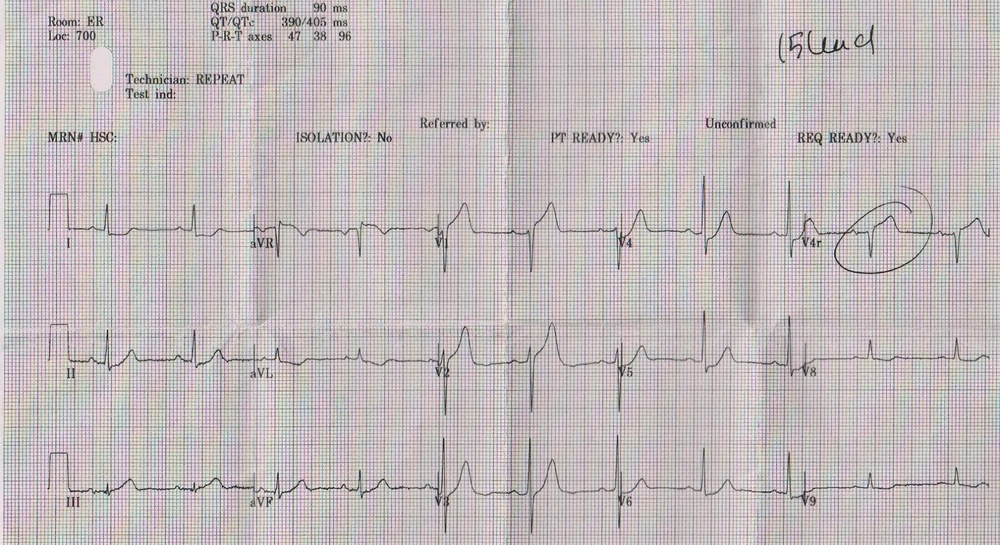
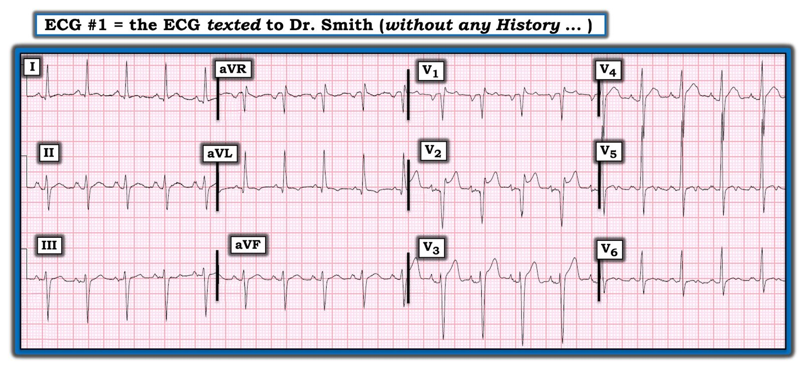

28/10/2020 — Đây có phải STEMI/OMI vách không? Nhiều ví dụ về STEMI/OMI vách
Bản dịch tiếng Việt của bài "Is this Septal STEMI/OMI? Many examples of Septal STEMI/OMI" – Dr. Smith’s ECG Blog. Giữ nguyên toàn bộ 11 hình ảnh của bản gốc.
Điện tâm đồ này được nhắn tin cho tôi với câu hỏi ngầm “Đây có phải STEMI không?”:


Bạn nghĩ sao?
Tôi trả lời rằng nhiều khả năng đây không phải STEMI.
Tại sao?
1. Có hình yên ngựa (saddleback). Tôi mới chỉ thấy 2 trường hợp hình yên ngựa kèm tắc LAD. Đường link tới hai ca này ở bên dưới.
2. Có điện thế cao. Chưa hẳn đạt tiêu chuẩn LVH, nhưng tôi chỉ có thể nói rằng nó có “dáng vẻ” (the look) đó
3. Sóng QS ở V2 đi kèm sóng P hai pha. Sóng P này cho thấy các điện cực đã được đặt quá cao. Khi điện cực V1, V2 đặt quá cao, hệ quả thường gặp là sóng QS ở V2.
4. QT ngắn. Ước lượng bằng mắt khoảng 280 ms. Máy tính đo được 284, với QTc (máy của chúng tôi dùng công thức hiệu chỉnh Hodges) là 352 ms. Nếu hiệu chỉnh theo Bazett thì sẽ là 393 ms, vẫn là ngắn đối với tắc LAD (dù hoàn toàn không phải là không thể).
5. STEMI vách thường có ST chênh xuống ở V5, V6, soi gương với V1.
Sau đó tôi được biết bệnh cảnh là sốt và đau đầu ở một người 32 tuổi.
Tôi đề nghị làm các điện tâm đồ liên tiếp và troponin.
Các điện tâm đồ liên tiếp không thay đổi. 2 xét nghiệm troponin độ nhạy cao đều = 4 ng/L (LoD dưới 4). Điều này loại trừ nhồi máu cơ tim cấp, cả OMI lẫn không phải OMI.
Queen of Hearts biết đây là một hình ảnh giả (Mimic):


BẠN CŨNG CÓ THỂ CÓ BOT AI PM Cardio!! (ỨNG DỤNG AI OMI PM CARDIO)
Nếu bạn muốn bot này giúp bạn chẩn đoán sớm OMI và cứu bệnh nhân cùng cơ tim của họ, bạn có thể đăng ký nhận phiên bản beta sớm của bot tại đây.
https://share-eu1.hsforms.com/18cAH0ZK0RoiVG3RjC5dYdwfyfsg (biểu mẫu đăng ký)
Những điểm cần học:
Như trên, hãy nghĩ tới:
1. Hình yên ngựa (saddleback)
2. Khoảng QT
3. Điện cực đặt quá cao
4. Điện thế cao
5. Tìm ST chênh xuống ở đâu đó, đặc biệt ở V5, V6
6. Sau đó kết hợp với bệnh cảnh lâm sàng và xác suất tiền nghiệm thấp
2 ca STEMI có hình yên ngựa
Một ca tắc LAD rất kín đáo….Sóng T ở V1??
Phân tích một ca tắc LAD bị bỏ sót (được xếp loại là NonSTEMI)
Xem các ví dụ STEMI vách (Septal STEMI) sau:
Một người đàn ông 50 mấy tuổi bị “đau do đầy hơi”


Một phụ nữ 70 mấy tuổi bị đau ngực


Đau ngực và RBBB. Bạn nghĩ sao?


Đau ngực ở bệnh nhân có tiền sử STEMI thành dưới. Hãy soi xét kỹ cả điện tâm đồ lẫn bệnh sử!


STEMI vách kèm ST chênh xuống ở thành bên, sau đó tái tưới máu nhờ tuần hoàn bàng hệ tạo ra sóng Wellens


STEMI vách với ST chênh lên ở V1 và V4R, và ST chênh xuống soi gương ở V5, V6



===================================
BÌNH LUẬN CỦA TÔI, bởi KEN GRAUER, MD (28/10/2020):
===================================
Chúng tôi được biết Dr. Smith đã nhận qua tin nhắn điện tâm đồ mà tôi tái hiện ở Hình 1. Không có thông tin lâm sàng nào được cung cấp.
Xin hãy XEM lại MỘT LẦN NỮA điện tâm đồ này ở Hình 1.
- BẠN sẽ nói gì NẾU bản ghi này được nhắn tin cho bạn?


Hình 1: Điện tâm đồ được nhắn tin cho Dr. Smith trong ca hôm nay. Không có thông tin lâm sàng nào được cung cấp (Xem bài).
SUY NGHĨ CỦA TÔI về điện tâm đồ #1:
Tôi sẽ bắt đầu bằng việc diễn giải bản ghi này một cách có hệ thống. Phân tích mô tả của tôi về điện tâm đồ #1 (xem xét tuần tự Tần số – Nhịp – Các khoảng – Trục – Lớn các buồng tim & Thay đổi QRST) như sau:
- Phức bộ QRS hẹp. Nhịp đều và nhanh. Đây là nhịp nhanh xoang với tần số ~115/phút.
- Tất cả các khoảng đều bình thường (tức là, khoảng PR không dài quá 1 ô lớn — QRS không dài quá nửa ô lớn — và QTc không kéo dài, dù khó đánh giá hơn ở tần số nhanh như vậy).
- Trục mặt phẳng trán lệch trái rõ rệt. Vì phức bộ QRS ở chuyển đạo II rõ ràng âm nhiều hơn dương — trục âm hơn -30 độ (có lẽ khoảng -45 độ) — đáp ứng tiêu chuẩn của LAHB (blốc phân nhánh trái trước – Left Anterior HemiBlock).
Về Lớn các buồng tim:
- Có thành phần âm sâu của sóng P ở chuyển đạo V1. Điều này gợi ý có thể có LAA (bất thường nhĩ trái – Left Atrial Abnormality).
- Mặc dù sóng P khá nổi bật ở chuyển đạo II — nó chưa hẳn nhọn, và chưa hẳn cao tới 2,5 mm — vì vậy tôi sẽ không gọi là RAA (bất thường nhĩ phải – Right Atrial Abnormality). Dù vậy — dường như có khía sóng P kín đáo nhưng có thật ở một số lượng chuyển đạo nhiều đến bất ngờ (tức là, ở các chuyển đạo II, III, aVR, aVF; và V2 đến V6).
- NẾU bệnh nhân là người lớn ít nhất 35 tuổi — thì một số tiêu chuẩn điện thế của LVH sẽ được thỏa mãn: i) R ở chuyển đạo aVL ≥12 mm; ii) tiêu chuẩn Cornell được đáp ứng, vì tổng R ở aVL + S ở V3 là ≥20 mm (đối với nữ) và/hoặc >28 mm (đối với nam); và, iii) tiêu chuẩn Peguero được đáp ứng, vì sóng S sâu nhất ở bất kỳ chuyển đạo ngực nào + S ở V4 là >23 mm (đối với nữ) và/hoặc >28 mm (đối với nam).
- LƯU Ý: Với những ai muốn tìm hiểu thêm về cách tiếp cận của tôi trong đánh giá LAA/RAA — BẤM VÀO ĐÂY. Để ôn lại các tiêu chuẩn điện tâm đồ của LVH mà tôi ưa dùng (bao gồm một Bảng tiêu chuẩn điện thế LVH dễ sử dụng) — Xin hãy cuộn xuống cuối trang để đọc Bình luận của tôi trong bài ngày 20 tháng Sáu năm 2020 trên Dr. Smith’s ECG Blog.
Về Thay đổi sóng Q–R–S–T:
- Các sóng Q (có lẽ là sóng q vách) nhỏ và hẹp thấy ở các chuyển đạo bên cao I và aVL. Ngoài ra — có dạng Qr bất thường (với sóng Q khởi đầu rất sâu và rộng) ở cả hai chuyển đạo V1 và V2.
- Sau dạng Qr khởi đầu ở các chuyển đạo V1 và V2 — sóng R tăng tiến khi ta đi qua các chuyển đạo trước tim, dù vùng chuyển tiếp hơi muộn (sóng R trở nên cao hơn độ sâu của sóng S ở giữa V4 đến V5). Sóng S vẫn tồn tại ở các chuyển đạo ngực cho tới tận chuyển đạo V6.
- Về thay đổi sóng ST-T — có một số dấu hiệu bất thường. Bao gồm: i) ST chênh lên không dưới 2-3 mm ở chuyển đạo V2, dù có hình dạng yên ngựa (lõm hướng lên); ii) Ít nhất 2 mm ST chênh lên tại điểm J ở chuyển đạo V3, với ST hơi thẳng đuỗn và mức ST chênh lên ít hơn ở chuyển đạo V4 (dù đoạn PR chênh xuống nhẹ ở các chuyển đạo V3 và V4 khiến việc đánh giá mức ST chênh lên khó hơn); iii) Cũng có ST chênh lên nhẹ ở chuyển đạo V1; iv) Sóng T đảo ngược nông ở chuyển đạo aVL, có thể phù hợp với “tăng gánh” thất trái; và, v) Bất thường sóng ST-T không đặc hiệu ở các chuyển đạo thành dưới (tức là, ST thẳng đuỗn/dạng vòm ở các chuyển đạo II và aVF) — kèm một khía kỳ lạ ở phần dường như là cuối sóng T ở các chuyển đạo bên I, V5, V6.
NHẬN ĐỊNH LÂM SÀNG về điện tâm đồ #1: Có rất nhiều dấu hiệu điện tâm đồ mô tả được trên bản ghi này! Vì vậy — chúng ta tuyệt đối cần một chút bệnh sử để diễn giải về mặt lâm sàng vô số dấu hiệu điện tâm đồ nêu trên.
- NẾU câu hỏi được đặt ra là có nên kích hoạt phòng thông tim hay không vì ST chênh lên rõ nhất ở chuyển đạo V2 (nhưng cũng thấy ở các chuyển đạo V1, V3 và V4) — thì tôi đồng ý với Dr. Smith, người đã chỉ ra ở trên rằng dạng ST chênh lên hình yên ngựa hiếm khi đi kèm tắc LAD cấp đến mức nào. Dù vậy — NẾU bệnh sử là một bệnh nhân lớn tuổi đến khám vì đau ngực mới khởi phát đáng lo ngại — tôi sẽ kém tự tin hơn khi loại trừ OMI cấp chỉ dựa trên một điện tâm đồ duy nhất này.
- Xem kỹ hơn — Mặc dù hình dạng sóng ST-T ở chuyển đạo V2 (và ở mức độ ít hơn ở chuyển đạo V1) giống với hình ảnh Brugada típ 2 hay hình ảnh “yên ngựa” — góc ß không đủ rộng để được xếp là hình ảnh Brugada típ 2. (Để biết thêm về hình dạng “yên ngựa” và các hình ảnh Brugada trên điện tâm đồ — Xin XEM Bình luận của tôi ở cuối trang trong bài ngày 5 tháng Chín năm 2020 trên Dr. Smith’s ECG Blog).
- Dr. Smith đã nêu câu hỏi về khả năng đặt sai vị trí các điện cực V1 và V2 (đặt quá cao trên ngực) là lý do của dạng Qr bất thường thấy ở các chuyển đạo này. Dù chắc chắn là có thể — tôi thường thấy dạng rSr’ (thay vì dạng Qr với sóng Q rộng như vậy) — đi kèm sóng P âm và sóng T âm (giống hình dạng QRST của chuyển đạo aVR) — khi các chuyển đạo V1 và V2 được đặt quá cao trên ngực. Dù vậy — sự kết hợp của LVH với hình ảnh yên ngựa nêu trên + việc đặt sai vị trí các chuyển đạo V1 và V2 chắc chắn có thể gây ra bức tranh thấy ở đây. (Để biết thêm về các dấu hiệu điện tâm đồ khi chuyển đạo V1 và V2 bị đặt quá cao trên ngực — Xin XEM Bình luận của tôi ở cuối trang trong bài ngày 4 tháng Mười Một năm 2018 trên Dr. Smith’s ECG Blog).
- LƯU Ý: Sẽ rất DỄ để xác định liệu các chuyển đạo V1 và V2 có bị đặt quá cao trên ngực hay không. Chỉ cần ghi lại điện tâm đồ sau khi kiểm tra lại vị trí đặt điện cực cho đúng. Điều này có ý nghĩa lâm sàng — vì nếu các chuyển đạo V1 và V2 được đặt đúng vị trí, thì chúng ta sẽ phải giải thích LAA và 2 sóng Q rộng ở các chuyển đạo này.
Một số dấu hiệu khác đã được nêu ở trên ở điện tâm đồ #1, có thể gợi ý bệnh tim cấu trúc nền nếu bối cảnh lâm sàng “phù hợp”. Bao gồm:
- Khía sóng P ở nhiều chuyển đạo (có thể phản ánh rối loạn dẫn truyền trong nhĩ, như thường thấy ở bệnh nhân có bệnh tim nền).
- LVH (khi đó sóng T đảo ngược nông ở chuyển đạo aVL có thể phản ánh tăng gánh thất trái).
- LAHB.
- Bất thường sóng ST-T ở nhiều chuyển đạo có thể do thiếu máu cục bộ.
DIỄN TIẾN của ca hôm nay: Theo Dr. Smith — hóa ra bệnh nhân trong ca hôm nay là một người 32 tuổi đến khoa cấp cứu (ED) vì đau đầu và sốt. Các điện tâm đồ liên tiếp đã được ghi — và chúng tôi được biết chúng không thay đổi so với điện tâm đồ #1. Hai xét nghiệm troponin độ nhạy cao đều âm tính.
- Biết được bệnh sử này là điều thiết yếu để diễn giải lâm sàng điện tâm đồ trong ca này. Troponin âm tính và việc không có thay đổi trên các điện tâm đồ liên tiếp về cơ bản đã loại trừ OMI.
- Khả năng biên độ QRS tăng phản ánh lớn buồng thất trái thật sự là thấp hơn nhiều, xét theo độ tuổi người lớn trẻ của bệnh nhân này. Khía sóng P ít có khả năng có ý nghĩa hơn — và, người ta tự hỏi nhịp nhanh xoang có thể ảnh hưởng bao nhiêu đến hình thái sóng ST-T.
- T.B. (P.S.) — Việc các điện tâm đồ liên tiếp “không thay đổi” khiến tôi tự hỏi LIỆU các nhân viên y tế có nhận ra khả năng đặt sai vị trí chuyển đạo V1,V2 hay không?